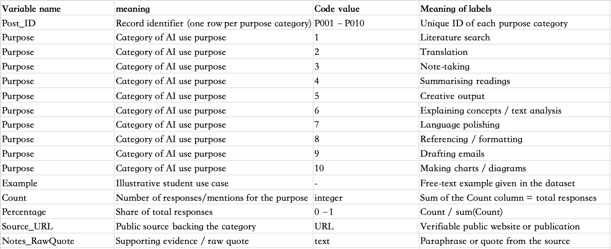

Week 4: Data and Power
Questioning the idea of "raw data" changed how I read everyday systems—from privacy agreements to university engagement tracking and AI image generation. Because data is never neutral, classifying information inevitably encodes assumptions and draws lines of inclusion or exclusion. Learning about data colonialism and uneven global power dynamics made me more attentive to who benefits from data extraction and who bears the cost. In the feminist data collection workshop, negotiating categories in a small group showed how value‑laden even basic data choices can be, reminding me to combine technical tools with critical self‑awareness.
This group workshop focused on critical, ethical dataset creation investigating students’ generative‑AI usage. We worked through key stages: defining research aims, evaluating ethical risks, selecting secondary online sources, identifying data gaps and analysing power embedded within data practices.
Data is not objective. Human choices of categories and labelling introduce bias. Without access to surveys or interviews, we relied on public online secondary sources and acknowledged their limitations. We created over five numerical variables, converting qualitative text into coded numerical values for spreadsheets.

Figure 1: Dataset variable and code‑value lookup table

Figure 2: Sample source material for dataset building

Figure 3: Preview of coded dataset entries